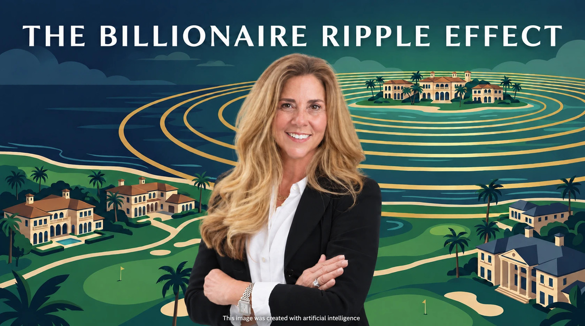

When the 2026 Forbes World’s Billionaires List was released in March, the Palm Beach Daily News counted at least 65 billionaires with strong residential ties to the Town of Palm Beach — a combined fortune of roughly $649 billion, up from $620 billion the year before. At the top of the list, for the first time, sits Interactive Brokers founder Thomas Peterffy at $82.9 billion, edging out Julia Koch and family at $81.2 billion.
Pause on the scale of that for a moment. The Town of Palm Beach has about 9,400 year-round residents. That works out to roughly one Forbes billionaire for every 140 people in town. New York City — with nearly nine hundred times the population — has only about twice as many billionaires.
An honest note on the number: “residential ties” is the operative phrase. Some of these 65 keep their primary residence elsewhere, and stricter primary-residence methodologies count fewer. But even under the most conservative counts, Palm Beach ranks among America’s top five billionaire cities.
Here is what most coverage misses: a billionaire buys one house. The market is made by the thousands of affluent households moving in beneath them.
The combined Palm Beach–West Palm Beach area is now home to roughly 11,500 millionaires and 78 centimillionaires — households with $100 million or more in investable wealth — and the millionaire population grew 112% between 2014 and 2024, making it one of the fastest-growing wealth hubs in the world, according to Henley & Partners.
The IRS migration data is even more striking. Between 2019 and 2023, Palm Beach County received a net inflow of $22.7 billion in adjusted gross income from domestic migration — the largest of any county in the United States. In 2023 alone, the net inflow was over $3 billion. The households moving in reported average incomes of roughly $178,000; the households moving out averaged about $98,500. The county can lose residents on net and still get dramatically wealthier, because every exchange trades a median household for an affluent one.
And this is no longer just people. Over the past five years, more than 140 companies have relocated or expanded in Palm Beach County — Citadel, Goldman Sachs, BlackRock, Elliott Management, Point72 among them — bringing over $1.1 billion in capital investment and more than 13,000 jobs. When the firms, family offices, attorneys, and wealth managers follow the wealth, the migration stops being a collection of second homes and becomes an economy.
Four forces anchor this shift structurally. Florida still has no state income tax, which for a high earner can fund a very expensive home all by itself. Palm Beach island is a fourteen-mile barrier island where prestige inventory cannot be manufactured — island values are up 118.2% over five years, the highest appreciation of any major Florida city. More than three-quarters of island purchases are all-cash — approaching 90% at the $10 million-plus tier — meaning there is no subprime-style leverage to unwind. And wealth attracts the services that attract more wealth: private banking, healthcare, aviation, schools, culture.
Durable does not mean frothless. Monthly medians in thin markets swing wildly on a handful of sales, luxury fortunes are stock-market-linked, and insurance costs are a genuine and rising drag. The honest read: a real structural repricing, with some individual properties still priced on headlines rather than comparables.
So how does a billionaire island 25 miles north lift values further south? Through what economists call substitution — and what buyers call relative value.
A buyer touring Palm Beach’s $20 million to $50 million market looks at a $5 million Boca Raton club estate and sees a bargain. And the spillover buyer is almost never a billionaire. It is the retired executive with $10 million to $50 million. The business owner who just sold the company. The hedge fund and private equity professionals staffing “Wall Street South.” The attorneys and physicians who serve the ultra-wealthy. The adult children and extended family of Palm Beach residents.
In my view, the cascade doesn’t stop at the country clubs. Many of these households — especially younger families and professionals relocating for those 13,000 new jobs — are comparing a club estate with a newer home in a luxury gated community like Seven Bridges, The Bridges, Lotus or Boca Bridges: guard-gated, built in the last decade, with a resort-style clubhouse and no country-club joining contribution. That is the next ring of the ripple, and it is where I spend my days.
Seven Bridges sits in west Delray Beach, minutes from Boca Raton’s club corridor, and offers what much of this spillover demand is looking for: a guard-gated community of single-family homes built since 2015, a roughly 30,000-square-foot clubhouse with a restaurant, resort and lap pools, fitness center, tennis and pickleball, and an easy drive to Boca Raton and Delray Beach.
Our own numbers tell the story: 16 homes on the market today, from $1.48 million to $3.95 million, against 28 sales so far this year. That is about 0.57 listings for every sale — more choice than in most of the neighboring communities in the comparison below, and a sign that buyers here are selective even as the wealth keeps arriving.
But this market rewards discipline, not wishful pricing. Value is bifurcating: updated homes on premium lake or cul-de-sac lots draw attention, while homes priced on headlines rather than comparables sit — several Seven Bridges listings have taken price reductions this fall. For sellers, that means sharp pricing and honest condition assessments. For buyers, it means real choice, and the total cost of ownership — home, association dues, taxes, insurance — should be underwritten from day one.
Billionaires make the headlines. Multimillionaires make the market. Palm Beach’s $649 billion is the gravitational center of an unprecedented wealth migration, but the force that moves our real estate is the cascade beneath it — the 11,500 millionaires, the $22.7 billion in migrated income, the 13,000 new jobs — flowing south in search of space, security, amenities, and relative value. The gated communities of west Delray and Boca Raton are not adjacent to that story. They are part of where it lands.
| Active | Closed YTD 2026 | Highest List | Lowest List |
|---|---|---|---|
| 16 | 28 | $3,950,000 | $1,475,000 |
Homes listed for every home sold. Lower means a tighter market. Seven Bridges is shown first; the other communities follow from tightest to least tight.
| Community | Active | Closed | Listed per sale |
|---|---|---|---|
| Seven Bridges | 16 | 28 | 0.57 |
| Boca West | 16 | 194 | 0.08 |
| Polo Club | 8 | 87 | 0.09 |
| Broken Sound | 18 | 100 | 0.18 |
| Seasons | 3 | 12 | 0.25 |
| Long Lake Estates | 2 | 8 | 0.25 |
| The Bridges | 8 | 29 | 0.28 |
| Mizner Country Club | 4 | 14 | 0.29 |
| The Oaks | 11 | 37 | 0.30 |
| Delaire | 3 | 10 | 0.30 |
| Stonebridge | 7 | 22 | 0.32 |
| Lotus | 14 | 41 | 0.34 |
| Boca Bridges | 12 | 29 | 0.41 |
| Addison Reserve | 15 | 33 | 0.45 |
| Woodfield | 24 | 50 | 0.48 |
| St. Andrews | 13 | 27 | 0.48 |
| Royal Palm Yacht & Country Club | 26 | 41 | 0.63 |
| Bocaire Country Club | 11 | 17 | 0.65 |
| Boca Grove | 10 | 15 | 0.67 |
| The Sanctuary* | 8 | 1 | — |
| Le Lac* | 1 | 2 | — |
View All 16 Seven Bridges Homes
Let’s walk through the real math for your situation and your community — confidential and no pressure.
Contact DinaDina Ulrich is a Licensed Real Estate Salesperson with The Edmund Bogen Team at Douglas Elliman Real Estate. She specializes in South Florida’s premier luxury gated communities, with a particular focus on Seven Bridges in Delray Beach and the neighboring communities of The Bridges, Lotus and Boca Bridges, and brings data-driven market intelligence to discerning buyers and sellers.
dina@bogenhomes.com · Cell: 561-769-8000